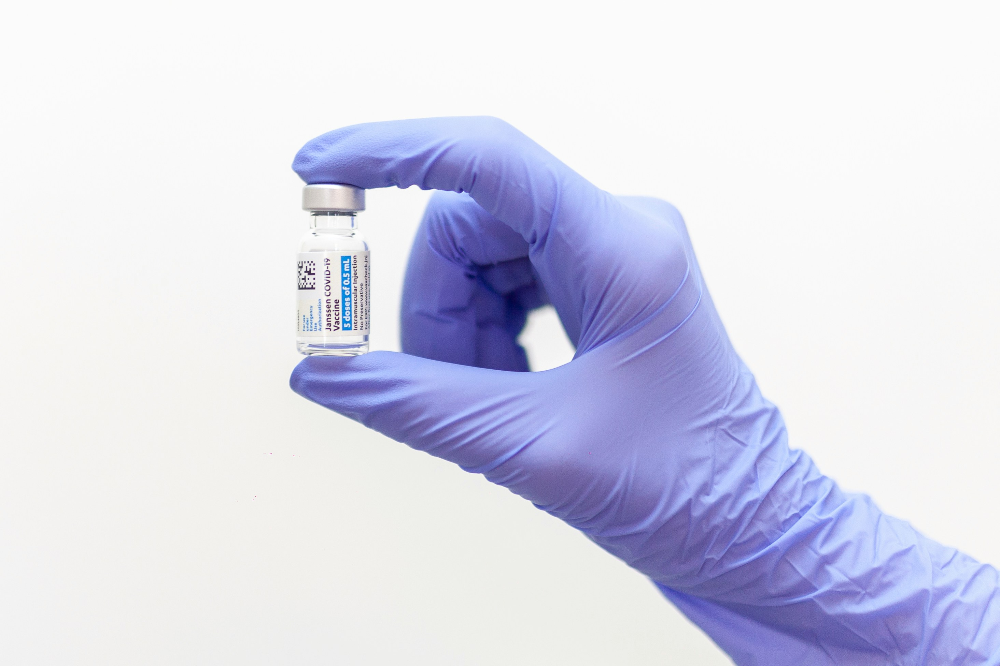

vaccines Vacinação Infantil
Por Que Vacinar?
A vacinação evita que o bebezinho fique doentinho na cama. Mamãe e papai: Levem pro posto de saúde! É grátis e seguro. Seguir o calendário de vacinação é uma forma de garantir uma infância mais segura e saudável. Além disso, a imunização protege toda a comunidade!


calendar_month Calendário Nacional de Vacinação Infantil
- Ao nascer: BCG, Hepatite B – Protege contra formas graves de tuberculose e hepatite B
- 2 meses: Pentavalente, Poliomielite, Rotavírus, Pneumocócica – Protege contra diversas doenças
- 4 meses: Mesmas vacinas da 2ª dose – Reforço da imunização inicial
- 6 meses: Pentavalente, Poliomielite, Influenza – Protege contra doenças respiratórias e neurológicas
- 12 meses: Tríplice viral, Pneumocócica, Meningocócica – Protege contra sarampo, caxumba, rubéola e meningite
- 15 meses: DTP, Poliomielite, Hepatite A, Tetra viral – Reforço e novas imunizações
💡 Mantenha sempre a Carteirinha de Vacinação atualizada e leve-a em todas as consultas médicas. A vacinação é um ato de amor e responsabilidade!
🔗 Saiba mais em: Calendário Oficial do Ministério da Saúde